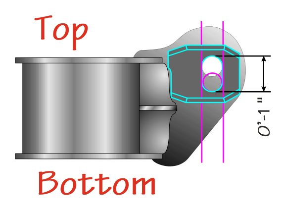
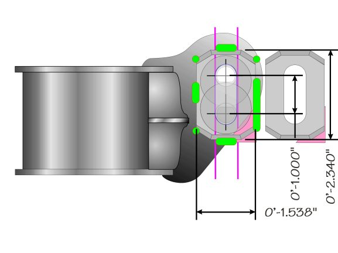

-
84 - 89 300ZX (Z31) Rear Camber Modification Photo Essay. … link
This topic has been edited 904/24/09) to reduce it's size and to include just the essential information.
If your post was deleted, please except my apology.
To the person that put this together. Please PM me, I'd like to give credit to you. -
Updated the mount drawing with some missing measurements.
Fix a couple typos and add this drawing
 -
I wonder if you didn't weld the seam at this step:
but still notched and bent it.The mounts were turned upside down and the exposed seam was MIG welded and ground smooth using a 80 grit "flapper" sanding disk.
Would the welds that you use to attach the final plate to the crossmember ear
still be enough?
Reason:
If i made my own plates, i could clamp them in place and take them into a welding
shop and have them weld it in place in one trip. One trip = one minimum shop charge.
'cause i think a welder is way, way off the radar this fathers day

84 AE/Shiro #683/Shiro #820/84 Turbo -
they are not really under a lot of stress, when you bolt it up tight, both the adjusters and tabs are clamped together tight enough so they won't move, friction + tack weld = enough
the only reason those adjuster brackets are good is that they help to align everything -
That's a very, very nice writeup. However, I remember when I did this long ago and I can tell you that the S13 subframe swap is only slightly harder. If you have the funds/parts, I would go that route.sigpic -
Yes, and if I was going to do it over, this is the design I'd use.Z_Karma wrote: Would the welds that you use to attach the final plate to the crossmember ear
still be enough?
Larger slot, to allow a full inch of adjustment.
The pink triangle is a filler. If it was accurately done, positioning we be easy.
The green areas are the welds.
Once welded, drill the holes and open up the slot with a hand jigsaw.
 -
When I did that part I just welded on 1/4" key stock to the top/bottom of the slot. Worked fine. One side had nothing. It's cool how you made that plate though.sigpic -
1artworkz wrote: Yes, and if I was going to do it over, this is the design I'd use.
Larger slot, to allow a full inch of adjustment.
Supurb write-up!!! Any idea when you are going to complete/add to this write-up the procedure, experience, pics, and real-time measurements (degrees/angles) that you encountered during the rear camber adjustments? Maybe before & after alignment specs., along with difficulty/ease in adjustments. Thanks, for a detailed description on a mod that most (if not all) of us need!!!
-
[quote]1artworkz wrote:Gary:Originally posted by Z_Karma
This suggestion should probably be a mandate. That is if anyone wants to actually get rid of their negative camber problem. I just got the car out of the alignment shop. After three hours they gave up. I asked them not to make any modifications to my rear crossmember as it was supposed to be fully adjustable now. Unfortunately, after performing the upgrade with the original deminsions and parts, you will not have enough adjustment to alieviate the problem. This was the best they could manage with the current setup on my car:
Left Rear
-1.6* (within spec.) (-1.9*-0.4*)
0.31* (out of spec) (0.04 - 0.12)
Right Rear
-2.8*
0.10
Needless to say this was highly dissappointing. I will now make the brackets with the new deminsions and see if that will solve the problem. I am not sure why the right rear is so much different from the left.2006 & 2007 Basketball National Champions! 2005, 6, & 7 Basketball SEC Champions! 2006 Football National Champions! 2006 Football SEC Champions! 2008 SEC Champions! 2008 Football National Champions! First University in history to capture three titles in a single year! I was there at all of them, and it was awesome! Go Gators! -
You used the stock "bracket" that were cut off from a wreck, right?
The previous modifications used 1" as the overall length. Obviously
this is not enough. Do you think, as indicated in my drawing that
1" from center to center well be enough?
Looks like I'll be back to re-modifying the modify.
Dang, and those things took some time to make. -
Gary:1artworkz wrote: You used the stock "bracket" that were cut off from a wreck, right?
The previous modifications used 1" as the overall length. Obviously
this is not enough. Do you think, as indicated in my drawing that
1" from center to center well be enough?
Looks like I'll be back to re-modifying the modify.
Dang, and those things took some time to make.
Yes, I used the stock ones from the junkyard. I do think the 1.00" of travel will be enough. The distance from the crossmember also appears to have a major effect, especially for the toe. In other words, how far vertical slot is from the crossmember. If we put smaller bolts in the bushings instead of the eccentric cams, I was able to get better readings with just this little bit of extra "play". Could not have been more than 1/8 - 3/16" extra. I should have written down which direction made the positive results. I think it was closer to the crossmember, but I am not sure. I was a little PO'ed, it was hot today, and I was on my lunch break. I wish I had not wasted my time powder coating the damn thing. What do you think is causing such a difference from left to right? By the way, Mike G also performed the mod per the specs listed and ran into the same problem. If anyone else has this issue please post. All my parts came from the junk yard and they could be bent or something.2006 & 2007 Basketball National Champions! 2005, 6, & 7 Basketball SEC Champions! 2006 Football National Champions! 2006 Football SEC Champions! 2008 SEC Champions! 2008 Football National Champions! First University in history to capture three titles in a single year! I was there at all of them, and it was awesome! Go Gators! -
I don't know if these will be helpful to anyone or not, but here is a couple of pictures of my original crossmember with the MSA rear camber adjustment plates. I had this crossmember modified a very long time ago to acheive near perferct rear camber. Yes, it is a hack job, but effective none the less. The MSA plates worked fine for the left but not for the right. When I say near perfect, I mean very close to neutral. I was between 0 & -0.5 degrees on both sides and had perfect rear tire wear for street driving. Notice that the right side was the bad one on this cross member as well. After looking at this picture, I was wrong about being closer to the crossmember. It needs to be further away from the crossmember. It also appears that the angle needs to be slightly tilted. I remember someone mentioning this fact previously on a post from this forum. Here are the pics:
[attachment=2:9a944]Original Crossmember.JPG[/attachment:9a944]
[attachment=1:9a944]Original Crossmember (1).JPG[/attachment:9a944]
[attachment=0:9a944]Original Crossmember (2).JPG[/attachment:9a944]2006 & 2007 Basketball National Champions! 2005, 6, & 7 Basketball SEC Champions! 2006 Football National Champions! 2006 Football SEC Champions! 2008 SEC Champions! 2008 Football National Champions! First University in history to capture three titles in a single year! I was there at all of them, and it was awesome! Go Gators! -
One more:
[attachment=0:ba7b1]Original Crossmember (3).JPG[/attachment:ba7b1]2006 & 2007 Basketball National Champions! 2005, 6, & 7 Basketball SEC Champions! 2006 Football National Champions! 2006 Football SEC Champions! 2008 SEC Champions! 2008 Football National Champions! First University in history to capture three titles in a single year! I was there at all of them, and it was awesome! Go Gators! -
As mentioned earlier, I ran into the same problems after performing this camber modification. After lowering with St springs, and replacing all bushings with available polyurethane bushings, I have way to much negative camber. I havn't got an alignment yet, but I measured my negative camber using a guage. It's about 4* on each side....
Back to the drawing board!"produce first.talk second." -
Mike:
Thanks for the update! I was wondering if I managed to get a bent part from the yard. This helps me think that we just need more adjustability. Are both of your sides equally out, or is the passenger side worse?2006 & 2007 Basketball National Champions! 2005, 6, & 7 Basketball SEC Champions! 2006 Football National Champions! 2006 Football SEC Champions! 2008 SEC Champions! 2008 Football National Champions! First University in history to capture three titles in a single year! I was there at all of them, and it was awesome! Go Gators!

Copyright © 2006–. All rights reserved. Privacy Policy